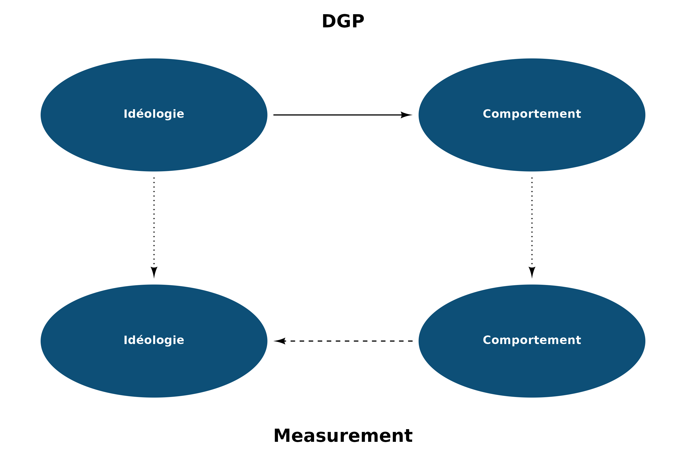
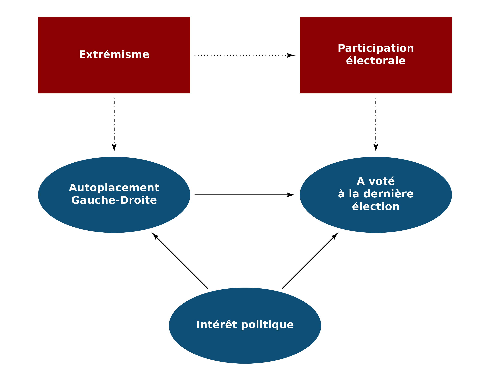
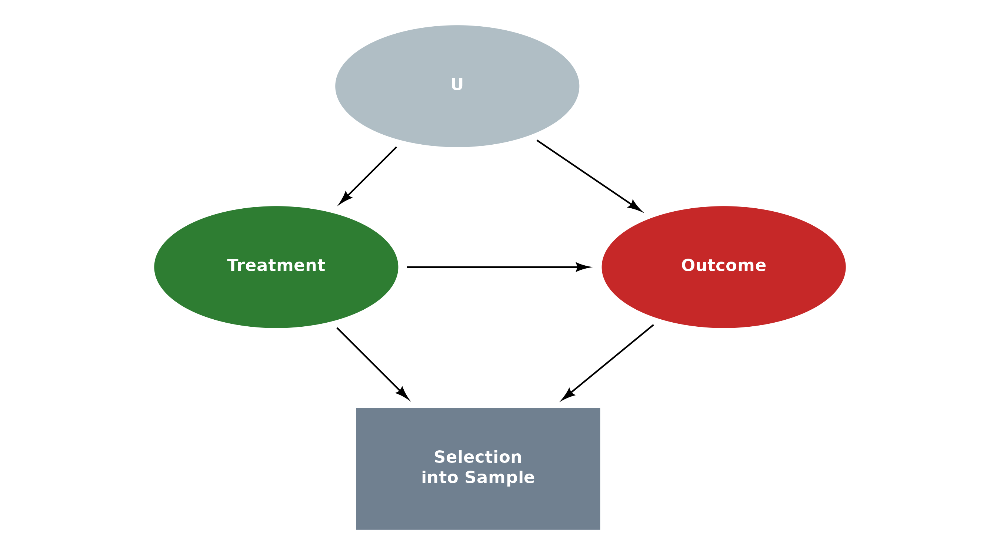
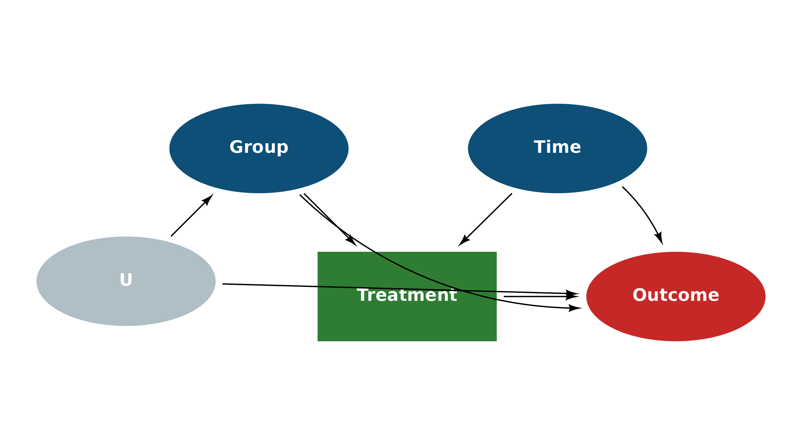
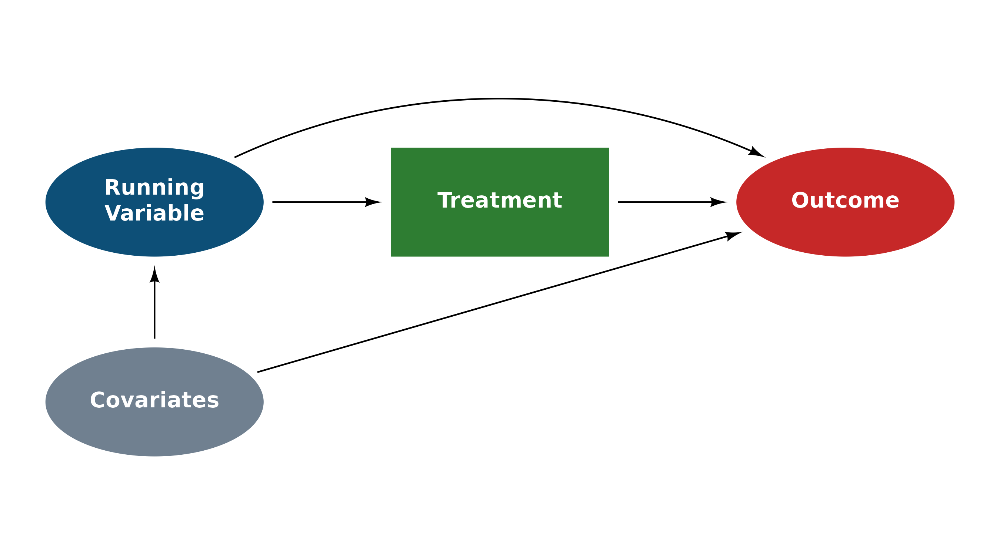
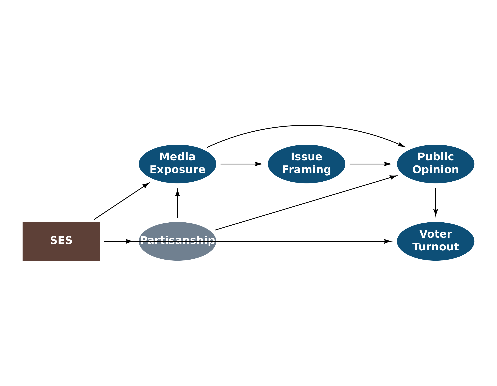
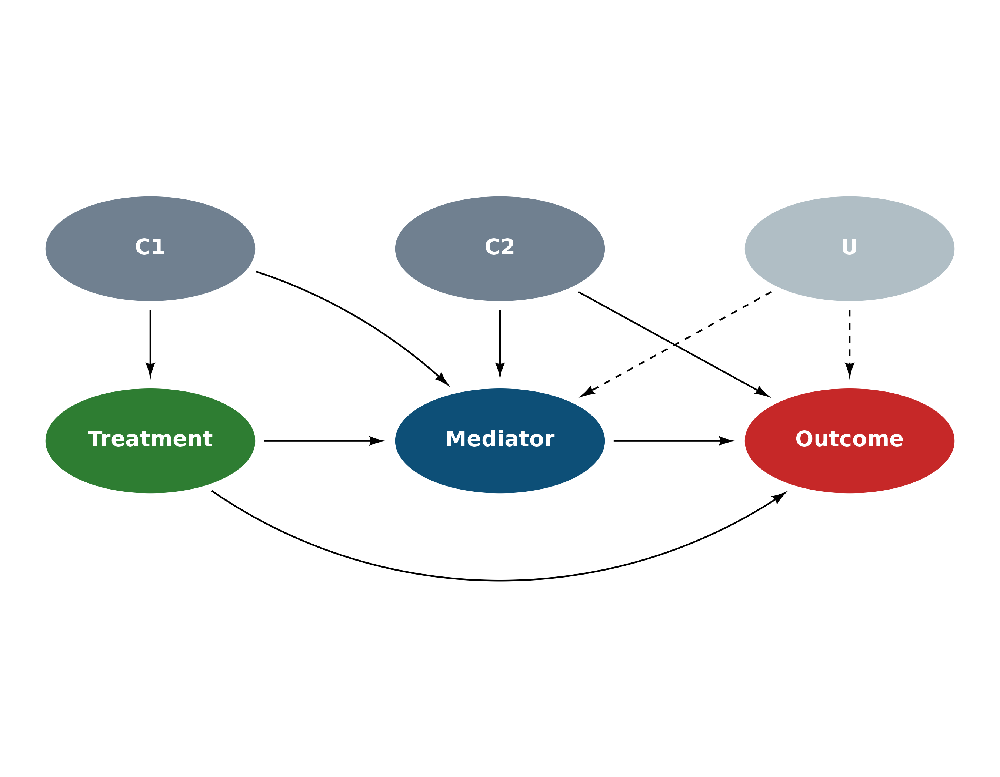
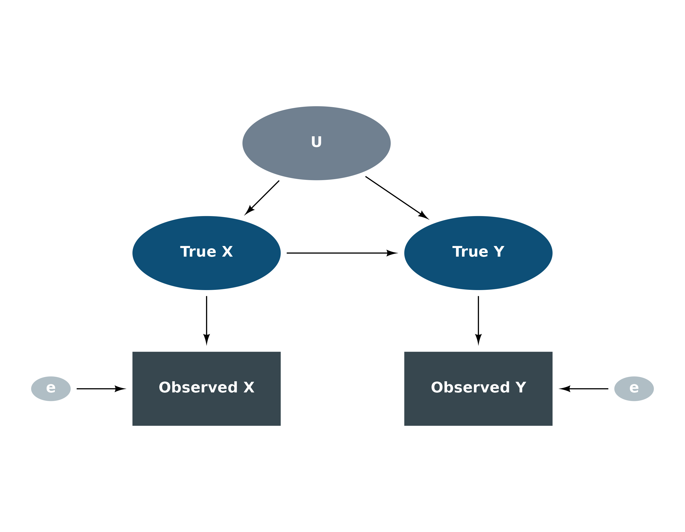
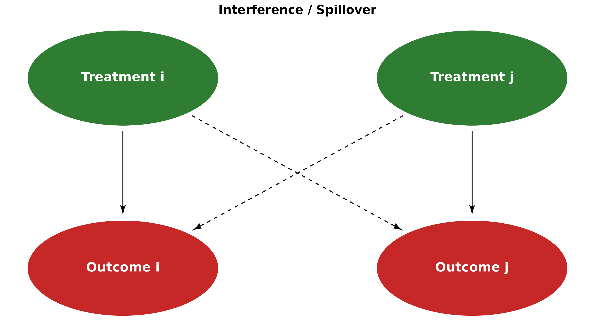

A collection of realistic DAG examples showing the full range of
daggr features: mixed node shapes, linetypes, annotations,
colors, curved edges, and complex layouts.
DGP vs Measurement
Two conceptual layers — the data-generating process (causal truth) and what we actually observe. Solid arrows are causal; dashed arrows are observed associations.
# DGP layer
dgp_ideo <- dag_ellipse("Idéologie")
dgp_behav <- dag_ellipse("Comportement") |>
place(dgp_ideo, "right", sep = 4)
# Measurement layer
meas_ideo <- dag_ellipse("Idéologie") |>
place(dgp_ideo, "bottom", sep = 3)
meas_behav <- dag_ellipse("Comportement") |>
place(meas_ideo, "right", sep = 4)
ggdiagram(font_size = 14) +
dgp_ideo + dgp_behav +
meas_ideo + meas_behav +
dag_connect(dgp_ideo, dgp_behav, linetype = "solid") +
dag_connect(meas_behav, meas_ideo, linetype = "dashed") +
dag_connect(dgp_ideo, meas_ideo, linetype = "dotted") +
dag_connect(dgp_behav, meas_behav, linetype = "dotted") +
ggplot2::annotate("text",
x = mean(c(dgp_ideo@center@x, dgp_behav@center@x)),
y = dgp_ideo@center@y + 2.5,
label = "DGP", fontface = "bold", size = 6) +
ggplot2::annotate("text",
x = mean(c(meas_ideo@center@x, meas_behav@center@x)),
y = meas_ideo@center@y - 2.5,
label = "Measurement", fontface = "bold", size = 6) +
theme_dag()
Political Attitudes
A complex DAG mixing ellipses (latent variables) and rectangles (constructed indicators), with different linetypes encoding the type of relationship.
A <- dag_ellipse("Intérêt politique")
B <- dag_ellipse("Autoplacement<br>Gauche-Droite") |>
place(A, "top left", sep = 3.5)
C <- dag_ellipse("A voté<br>à la dernière<br>élection") |>
place(A, "top right", sep = 3.5)
D <- dag_rectangle("Extrémisme", fill = "darkred") |>
place(B, "top", sep = 2.5)
E <- dag_rectangle("Participation<br>électorale", fill = "darkred") |>
place(C, "top", sep = 2.5)
ggdiagram() +
A + B + C + D + E +
dag_connect(D, B, linetype = 4) +
dag_connect(E, C, linetype = 4) +
dag_connect(A, B) +
dag_connect(A, C) +
dag_connect(B, C) +
dag_connect(D, E, linetype = 3) +
theme_dag()
Selection Bias
Conditioning on a post-treatment variable can induce selection bias. Here, S (selection into the sample) is caused by both treatment and outcome, creating a collider structure.
D <- dag_ellipse("Treatment", fill = "#2E7D32")
Y <- dag_ellipse("Outcome", fill = "#C62828") |>
place(D, "right", sep = 5)
S <- dag_rectangle("Selection<br>into Sample", fill = "#708090") |>
place(D, "below right", sep = 3)
U <- dag_ellipse("U", fill = "#B0BEC5") |>
place(D, "above right", sep = 2.5)
ggdiagram(font_size = 14) +
D + Y + S + U +
dag_connect(D, Y) +
dag_connect(D, S) +
dag_connect(Y, S) +
dag_connect(U, D) +
dag_connect(U, Y) +
theme_dag()
Difference-in-Differences
The parallel trends assumption visualized. Group (treatment vs control) and Time (pre vs post) jointly determine the outcome. The unobserved counterfactual is what would have happened to the treated group absent treatment.
Grp <- dag_ellipse("Group")
Time <- dag_ellipse("Time") |> place(Grp, "right", sep = 4)
Tx <- dag_rectangle("Treatment", fill = "#2E7D32") |>
place(Grp, "below right", sep = 3)
Y <- dag_ellipse("Outcome", fill = "#C62828") |>
place(Tx, "right", sep = 3)
U <- dag_ellipse("U", fill = "#B0BEC5") |>
place(Grp, "below left", sep = 2.5)
ggdiagram(font_size = 14) +
Grp + Time + Tx + Y + U +
dag_connect(Grp, Tx) +
dag_connect(Time, Tx) +
dag_connect(Tx, Y) +
dag_connect(Grp, Y, arc_bend = 0.3) +
dag_connect(Time, Y, arc_bend = -0.3) +
dag_connect(U, Grp) +
dag_connect(U, Y) +
theme_dag()
Regression Discontinuity
The running variable determines treatment assignment via a threshold. Potential confounders affect the outcome but cannot manipulate the running variable precisely at the cutoff.
R <- dag_ellipse("Running<br>Variable")
Tx <- dag_rectangle("Treatment", fill = "#2E7D32") |>
place(R, "right", sep = 3.5)
Y <- dag_ellipse("Outcome", fill = "#C62828") |>
place(Tx, "right", sep = 3.5)
X <- dag_ellipse("Covariates", fill = "#708090") |>
place(R, "below", sep = 2.5)
ggdiagram(font_size = 14) +
R + Tx + Y + X +
dag_connect(R, Tx) +
dag_connect(Tx, Y) +
dag_connect(R, Y, arc_bend = -0.3) +
dag_connect(X, R) +
dag_connect(X, Y) +
theme_dag()
Media Effects
A multi-step model of media influence on political behavior, with both direct and mediated pathways.
media <- dag_ellipse("Media<br>Exposure")
framing <- dag_ellipse("Issue<br>Framing") |>
place(media, "right", sep = 4)
opinion <- dag_ellipse("Public<br>Opinion") |>
place(framing, "right", sep = 4)
turnout <- dag_ellipse("Voter<br>Turnout") |>
place(opinion, "below", sep = 3)
partisan <- dag_ellipse("Partisanship", fill = "#708090") |>
place(media, "below", sep = 3)
ses <- dag_rectangle("SES", fill = "#5D4037") |>
place(partisan, "left", sep = 3)
ggdiagram(font_size = 14) +
media + framing + opinion + turnout + partisan + ses +
dag_connect(media, framing) +
dag_connect(framing, opinion) +
dag_connect(opinion, turnout) +
dag_connect(media, opinion, arc_bend = -0.3) +
dag_connect(partisan, media) +
dag_connect(partisan, opinion) +
dag_connect(partisan, turnout) +
dag_connect(ses, media) +
dag_connect(ses, partisan) +
dag_connect(ses, turnout) +
theme_dag()
Mediation with Confounders
A complete mediation analysis DAG with treatment-induced and exposure-induced confounders.
X <- dag_ellipse("Treatment", fill = "#2E7D32")
M <- dag_ellipse("Mediator") |> place(X, "right", sep = 4)
Y <- dag_ellipse("Outcome", fill = "#C62828") |> place(M, "right", sep = 4)
C1 <- dag_ellipse("C1", fill = "#708090") |>
place(X, "above", sep = 2.5)
C2 <- dag_ellipse("C2", fill = "#708090") |>
place(M, "above", sep = 2.5)
U <- dag_ellipse("U", fill = "#B0BEC5") |>
place(Y, "above", sep = 2.5)
ggdiagram(font_size = 14) +
X + M + Y + C1 + C2 + U +
dag_connect(X, M) +
dag_connect(M, Y) +
dag_connect(X, Y, arc_bend = 0.4) +
dag_connect(C1, X) +
dag_connect(C1, M, arc_bend = -0.2) +
dag_connect(C2, M) +
dag_connect(C2, Y) +
dag_connect(U, M, linetype = "dashed") +
dag_connect(U, Y, linetype = "dashed") +
theme_dag()
Measurement Error
When variables are measured with error, the observed indicators (rectangles) are noisy reflections of the true latent constructs (ellipses).
# Latent variables
X_true <- dag_ellipse("True X")
Y_true <- dag_ellipse("True Y") |> place(X_true, "right", sep = 5)
U <- dag_ellipse("U", fill = "#708090") |>
place(X_true, "above right", sep = 2.5)
# Observed indicators
X_obs <- dag_rectangle("Observed X", fill = "#37474F") |>
place(X_true, "below", sep = 2.5)
Y_obs <- dag_rectangle("Observed Y", fill = "#37474F") |>
place(Y_true, "below", sep = 2.5)
# Measurement errors
e_x <- dag_ellipse("e", fill = "#B0BEC5", a = 0.8, b = 0.5) |>
place(X_obs, "left", sep = 2.5)
e_y <- dag_ellipse("e", fill = "#B0BEC5", a = 0.8, b = 0.5) |>
place(Y_obs, "right", sep = 2.5)
ggdiagram(font_size = 14) +
X_true + Y_true + U + X_obs + Y_obs + e_x + e_y +
dag_connect(X_true, Y_true) +
dag_connect(U, X_true) +
dag_connect(U, Y_true) +
dag_connect(X_true, X_obs) +
dag_connect(Y_true, Y_obs) +
dag_connect(e_x, X_obs) +
dag_connect(e_y, Y_obs) +
theme_dag()
Interference / Spillover
In network or spatial settings, one unit’s treatment can affect another unit’s outcome — a violation of SUTVA.
D_i <- dag_ellipse("Treatment i", fill = "#2E7D32")
D_j <- dag_ellipse("Treatment j", fill = "#2E7D32") |>
place(D_i, "right", sep = 5)
Y_i <- dag_ellipse("Outcome i", fill = "#C62828") |>
place(D_i, "below", sep = 3)
Y_j <- dag_ellipse("Outcome j", fill = "#C62828") |>
place(D_j, "below", sep = 3)
ggdiagram(font_size = 14) +
D_i + D_j + Y_i + Y_j +
dag_connect(D_i, Y_i) +
dag_connect(D_j, Y_j) +
dag_connect(D_i, Y_j, linetype = "dashed") +
dag_connect(D_j, Y_i, linetype = "dashed") +
theme_dag() +
ggplot2::labs(title = "Interference / Spillover")